# 注意力机制模块
# SE
【Squeeze-and-Excitation Networks】：https://arxiv.org/abs/1709.01507
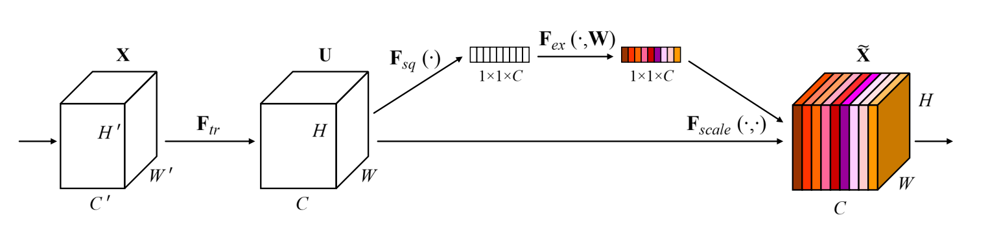
class SE_Block(nn.Module): | |
def __init__(self, inchannel, ratio=16): | |
super(SE_Block, self).__init__() | |
self.gap = nn.AdaptiveAvgPool2d((1, 1)) | |
mid_channel = max(inchannel // ratio, 1) | |
if mid_channel == 1 and inchannel < ratio: | |
print(f"Warning: ratio={ratio} is too large for inchannel={inchannel}, using mid_channel=1") | |
self.fc = nn.Sequential( | |
nn.Linear(inchannel, mid_channel, bias=False), | |
nn.ReLU(), | |
nn.Linear(mid_channel, inchannel, bias=False), | |
nn.Sigmoid() | |
) | |
def forward(self, x): | |
b, c, h, w = x.size() | |
y = self.gap(x).view(b, c) | |
y = self.fc(y).view(b, c, 1, 1) | |
return x * y.expand_as(x) | |
class SE_Block_Conv(nn.Module): | |
def __init__(self, inchannel, ratio=16): | |
super(SE_Block_Conv, self).__init__() | |
self.gap = nn.AdaptiveAvgPool2d((1, 1)) | |
mid_channel = max(inchannel // ratio, 1) | |
if mid_channel == 1 and inchannel < ratio: | |
print(f"Warning: ratio={ratio} is too large for inchannel={inchannel}, using mid_channel=1") | |
self.conv = nn.Sequential( | |
nn.Conv2d(inchannel, mid_channel, kernel_size=1, stride=1, padding=0), | |
nn.ReLU(), | |
nn.Conv2d(mid_channel, inchannel, kernel_size=1, stride=1, padding=0), | |
nn.Sigmoid() | |
) | |
def forward(self, x): | |
b, c, h, w = x.size() | |
y = self.gap(x) | |
y = self.conv(y) | |
return x * y |
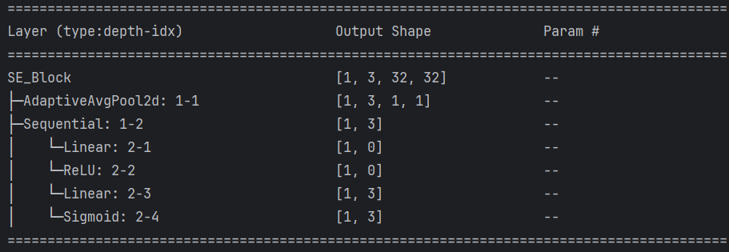
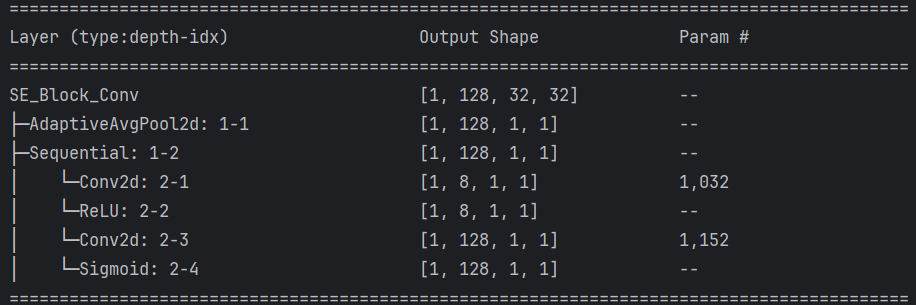
分别实现了 Linear 模式和 Conv 模式。
# CBAM
【CBAM: Convolutional Block Attention Module】：https://arxiv.org/abs/1807.06521
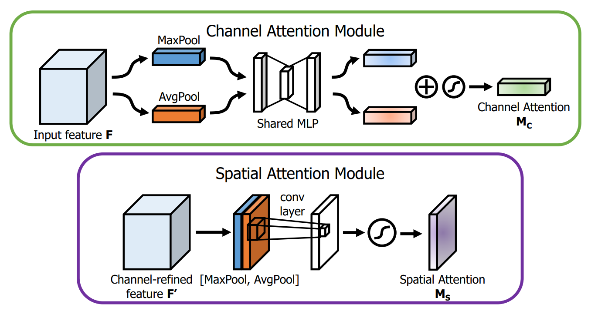
CBAM 主要包含两个独立的子模块，它们按顺序排列：
- 通道注意力模块
- 空间注意力模块
其工作流程如下：输入特征图 → 通道注意力模块 → 与输入特征图相乘（加权，权重共享）→ 空间注意力模块 → 再次相乘（加权）→ 最终输出特征图。
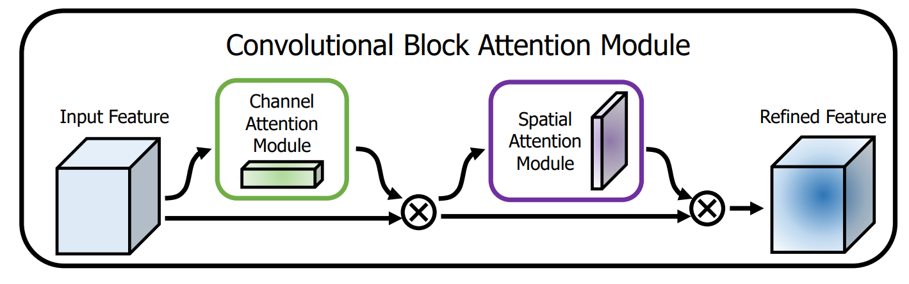
class CAM(nn.Module): | |
def __init__(self, inchannel, ratio=16): | |
super(CAM, self).__init__() | |
self.gap = nn.AdaptiveAvgPool2d((1, 1)) | |
self.mp = nn.AdaptiveMaxPool2d((1, 1)) | |
mid_channel = max(inchannel // ratio, 1) | |
if mid_channel == 1 and inchannel < ratio: | |
print(f"Warning: ratio={ratio} is too large for inchannel={inchannel}, using mid_channel=1") | |
self.convMLP = nn.Sequential( | |
nn.Conv2d(inchannel, mid_channel, kernel_size=1, stride=1, padding=0), | |
nn.ReLU(), | |
nn.Conv2d(mid_channel, inchannel, kernel_size=1, stride=1, padding=0), | |
nn.Sigmoid() | |
) | |
def forward(self, x): | |
b, c, h, w = x.size() | |
y1 = self.convMLP(self.gap(x)) | |
y2 = self.convMLP(self.mp(x)) | |
y = y1 + y2 | |
return x * y | |
class SAM(nn.Module): | |
def __init__(self, kernel_size=7): | |
super(SAM, self).__init__() | |
self.conv = nn.Conv2d(2, 1, kernel_size=kernel_size, | |
padding=kernel_size//2) | |
self.sigmoid = nn.Sigmoid() | |
def forward(self, x): | |
avg_out = torch.mean(x, dim=1, keepdim=True) | |
max_out, _ = torch.max(x, dim=1, keepdim=True) | |
y = torch.cat([avg_out, max_out], dim=1) | |
y = self.sigmoid(self.conv(y)) | |
return x * y | |
class CBMA(nn.Module): | |
def __init__(self, inchannel, ratio=16): | |
super(CBMA, self).__init__() | |
self.cam = CAM(inchannel, ratio) | |
self.sam = SAM() | |
def forward(self, x): | |
x1 = self.cam(x) | |
x2 = self.sam(x1) | |
return x2 |
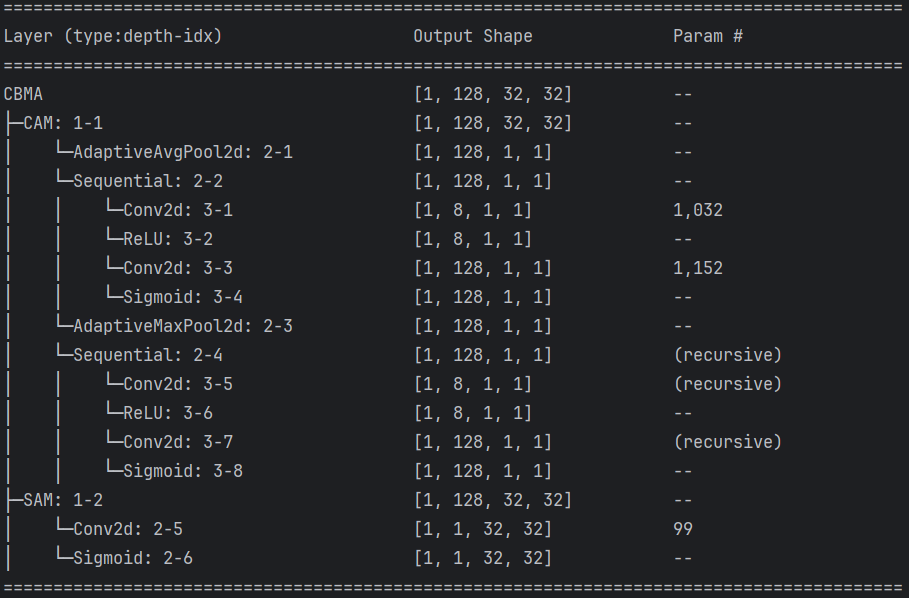
# BAM
【BAM: Bottleneck Attention Module】：https://arxiv.org/abs/1807.06514
BAM 的核心思想可以概括为：通过并行的通道和空间两个独立分支分别学习 “注意什么” 和 “在哪里注意”，然后将两个注意力图融合，对原始特征图进行精细化重构。
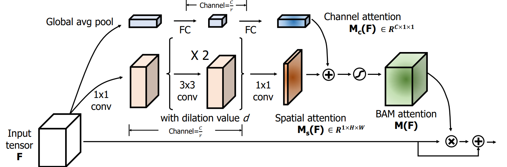
class BAM(nn.Module): | |
def __init__(self, inchannel, ratio=16, dilation=(1, 2, 4)): | |
super(BAM, self).__init__() | |
mid_channel = max(inchannel // ratio, 1) | |
if mid_channel == 1 and inchannel < ratio: | |
print(f"Warning: ratio={ratio} is too large for inchannel={inchannel}, using mid_channel=1") | |
self.r1_channel = nn.Sequential( | |
nn.AdaptiveAvgPool2d((1, 1)), | |
nn.Conv2d(inchannel, mid_channel, kernel_size=1, stride=1, padding=0), | |
nn.ReLU(inplace=True), | |
nn.Conv2d(mid_channel, inchannel, kernel_size=1, stride=1, padding=0), | |
) | |
self.r2_1_maps = nn.Sequential( | |
nn.Conv2d(inchannel, mid_channel, kernel_size=1, stride=1, padding=0, bias=False), | |
nn.BatchNorm2d(mid_channel), | |
nn.ReLU(inplace=True), | |
) | |
convs = [] | |
for d in dilation: | |
convs.append( | |
nn.Sequential( | |
nn.Conv2d(mid_channel, mid_channel, kernel_size=3, stride=1, padding=d, dilation=d, bias=False), | |
nn.BatchNorm2d(mid_channel), | |
nn.ReLU(inplace=True), | |
) | |
) | |
self.r2_2_maps = nn.Sequential(*convs) | |
self.r2_3_maps = nn.Sequential( | |
nn.Conv2d(mid_channel, 1, kernel_size=1, stride=1, padding=0, bias=False), | |
) | |
def forward(self, x): | |
b, c, h, w = x.size() | |
y1 = self.r1_channel(x) | |
y2_1 = self.r2_1_maps(x) | |
y2_2 = self.r2_2_maps(y2_1) | |
y2_3 = self.r2_3_maps(y2_2) | |
y = y1 + y2_3 | |
y_hat = torch.sigmoid(y) * x | |
return y_hat + x |
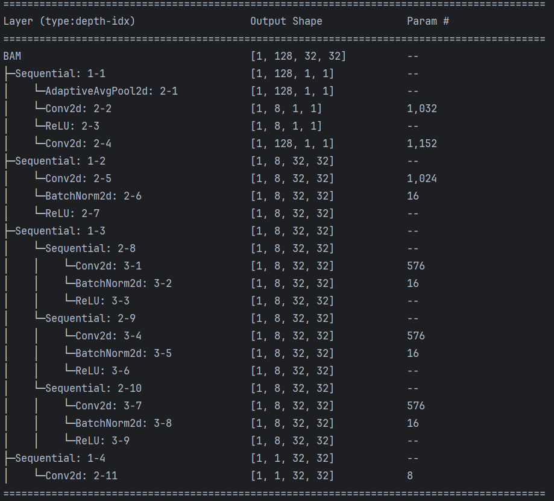
# A2
【-Nets: Double Attention Networks】：https://arxiv.org/abs/1810.11579
其核心创新在于提出了一个即插即用的双注意力块（Double Attention Block），它能使模型在显著降低计算成本的同时，有效地感知全局信息。
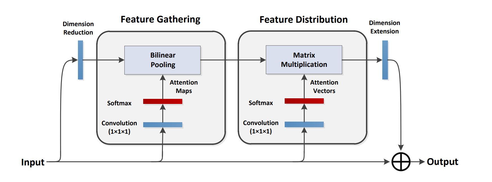
- 第一步：特征收集 —— 提炼核心摘要
这一步的目标是从输入特征的整个空间或时空中，收集最关键的信息，并将其浓缩成一个紧凑的集合。它采用的是二阶注意力池化，而不是简单的全局平均池化。二阶池化能够捕捉特征之间更复杂的相关性和交互信息，生成的 “核心知识摘要” 信息量更丰富，表达能力也更强。 - 第二步：特征分发 —— 按需精准取阅
在第一步得到了紧凑的全局特征集合后，第二步需要将其分发回原始特征图的每一个位置。但分发不是 “一刀切” 的，而是自适应的。它会根据每个位置的局部特征内容，通过另一个注意力机制，从全局特征集合中 “挑选” 出对该位置最有帮助的全局信息。这样，图像中的每个点都能获得为其 “定制” 的全局上下文，极大地丰富了局部特征的语义信息。
class A2(nn.Module): | |
def __init__(self, channels, reductio: int = 4, L: int = 32): | |
super(A2, self).__init__() | |
assert channels > 0 | |
self.channels = channels | |
inter = max(channels // reductio, L) | |
self.inter = inter | |
self.ConvA = nn.Conv2d(channels, inter, kernel_size=1, bias=False) | |
self.ConvB = nn.Conv2d(channels, inter, kernel_size=1, bias=False) | |
self.ConvC = nn.Conv2d(channels, inter, kernel_size=1, bias=False) | |
self.proj = nn.Sequential( | |
nn.Conv2d(inter, channels, kernel_size=1, bias=False), | |
nn.BatchNorm2d(channels), | |
) | |
def forward(self, x:torch.Tensor): | |
b, c, h, w = x.shape | |
N = h * w | |
A_map = self.ConvA(x).view(b, self.inter, N) | |
B_feat = self.ConvB(x).view(b, self.inter, N) | |
V_map = self.ConvC(x).view(b, self.inter, N) | |
A_att = F.softmax(A_map, dim=2) | |
G = torch.bmm(B_feat, A_att.permute(0, 2, 1)) | |
V_att = F.softmax(V_map, dim=1) | |
Y = torch.bmm(G, V_att) | |
Y = Y.view(b, self.inter, h, w) | |
out = self.proj(Y) | |
return out + x |
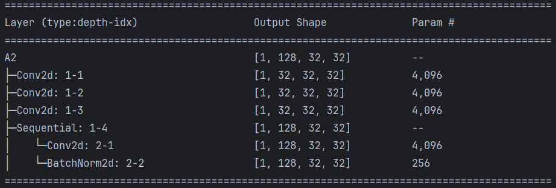
A_att = F.softmax(A_map, dim=2) 这里是空间注意力， V_att = F.softmax(V_map, dim=1) 这里是通道注意力
# SK
【Selective Kernel Networks】：https://arxiv.org/abs/1903.06586
SKNet 实现了一个 “多尺度提案，全局评估，动态选择” 的过程，让网络能够根据输入图像中目标的尺度，智能地调整自己的 “焦距”。
- Split：对于输入的特征图，SK 单元会并行使用多个不同卷积核大小（例如 3×3 和 5×5）的分支对其进行卷积操作，生成多个包含不同尺度信息的特征图。这就像从多个不同焦距的镜头去观察同一个物体。
- Fuse：这一步的目标是整合来自不同分支的信息，为后续的 “选择” 生成一个全局的、综合的指导信号。
- 首先，将多个分支的特征图通过逐元素求和的方式融合在一起。
- 然后，对这个融合后的特征图进行全局平均池化，将空间信息压缩成一个通道描述符，从而获得全局视野。
- 接着，通过一个简单的全连接层（先降维再升维）对这个描述符进行处理，最终生成一组紧凑的、用于指导特征选择的权重向量。
- Select：这是实现 “自适应” 的关键一步。
- 将 Fuse 步骤生成的权重向量通过 Softmax 函数进行归一化，得到每个分支（即每种尺度）的注意力权重。这个权重代表了网络认为在当前输入下，哪种尺度信息更重要。
- 最后，将这些学习到的注意力权重，对应地乘回 Split 步骤生成的各个分支的特征图上，并进行加权求和，得到最终的输出特征。
from collections import OrderedDict | |
class SKAttention(nn.Module): | |
def __init__(self, channel=512, kernels=[1, 3, 5, 7], reduction=16, group=1, L=32): | |
super().__init__() | |
self.d = max(L, channel // reduction) | |
self.convs = nn.ModuleList([]) | |
for k in kernels: | |
self.convs.append( | |
nn.Sequential(OrderedDict([ | |
('conv', nn.Conv2d(channel, channel, kernel_size=k, padding=k // 2, groups=group)), | |
('bn', nn.BatchNorm2d(channel)), | |
('relu', nn.ReLU()) | |
])) | |
) | |
self.fc = nn.Linear(channel, self.d) | |
self.fcs = nn.ModuleList([]) | |
for i in range(len(kernels)): | |
self.fcs.append(nn.Linear(self.d, channel)) | |
self.softmax = nn.Softmax(dim=0) | |
def forward(self, x): | |
bs, c, _, _ = x.size() | |
conv_outs = [] | |
for conv in self.convs: | |
conv_outs.append(conv(x)) | |
feats = torch.stack(conv_outs, 0) #k,bs,channel,h,w | |
U = sum(conv_outs) #bs,c,h,w | |
S = U.mean(-1).mean(-1) #bs,c | |
Z = self.fc(S) #bs,d | |
weights = [] | |
for fc in self.fcs: | |
weight = fc(Z) | |
weights.append(weight.view(bs, c, 1, 1)) #bs,channel | |
attention_weughts = torch.stack(weights, 0) #k,bs,channel,1,1 | |
attention_weughts = self.softmax(attention_weughts) #k,bs,channel,1,1 | |
V = (attention_weughts * feats).sum(0) | |
return V |
nn.AdaptiveAvgPool2d((1, 1))(U).view(bs, c).shape 和 U.mean(-1).mean(-1) 一直，前者可读性更好，后者代码量少。
V = (attention_weughts * feats).sum(0) 这里会自动删除零维度。
# ECA
【ECA-Net: Efficient Channel Attention for Deep Convolutional Neural Networks】：https://arxiv.org/abs/1910.03151
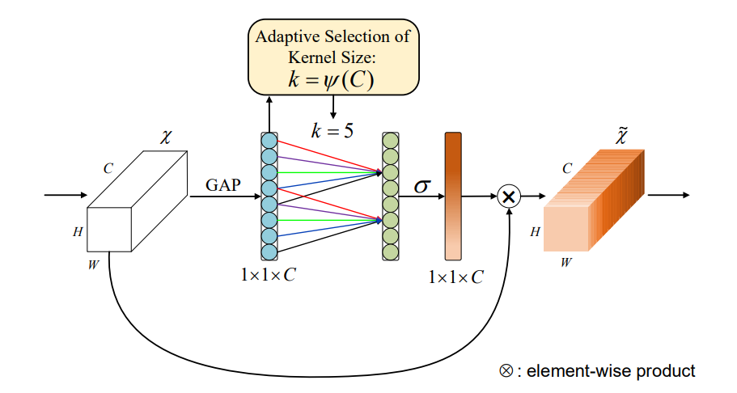
import math | |
class ECA(nn.Module): | |
def __init__(self, channel: int, k_size: int = None, gamma: int = 2, b: int = 1): | |
super().__init__() | |
assert channel > 0 | |
self.gap = nn.AdaptiveAvgPool2d(1) | |
if k_size is None: | |
t = int(abs((math.log(channel, 2) + b) / gamma)) | |
k_size = t if t % 2 else t + 1 | |
k_size = max(3, k_size) | |
self.conv1d = nn.Conv1d(1, 1, kernel_size=k_size, padding=(k_size - 1) // 2, bias=False) | |
def forward(self, x: torch.Tensor): | |
b, c, h, w = x.shape | |
y = self.gap(x) | |
y = y.squeeze(-1).squeeze(-1) | |
y = self.conv1d(y.unsqueeze(1)) | |
y = y.sigmoid().squeeze(1).unsqueeze(-1).unsqueeze(-1) | |
return x * y |
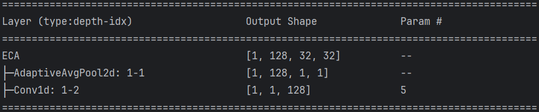
# CA
【Coordinate Attention for Efficient Mobile Network Design】：https://arxiv.org/abs/2103.02907
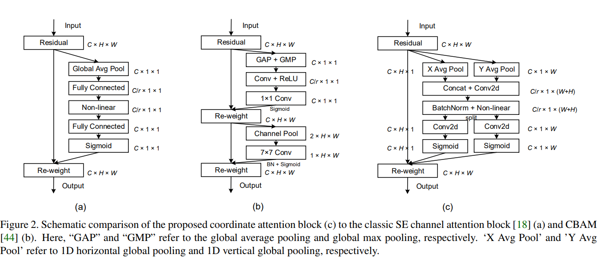
class CA(nn.Module): | |
def __init__(self, channel: int, reduction: int = 32): | |
super().__init__() | |
assert channel > 0 | |
mip = max(channel // reduction, 8) | |
self.conv1 = nn.Conv2d(channel, mip, kernel_size=1, stride=1, padding=0, bias=False) | |
self.bn = nn.BatchNorm2d(mip) | |
self.act = nn.Hardswish(inplace=True) | |
self.conv_h = nn.Conv2d(mip, channel, kernel_size=1, stride=1, padding=0, bias=False) | |
self.conv_w = nn.Conv2d(mip, channel, kernel_size=1, stride=1, padding=0, bias=False) | |
self.sigmoid = nn.Sigmoid() | |
def forward(self, x: torch.Tensor): | |
b, c, h, w = x.shape | |
# x_h (B, C, H, 1) | |
x_h = x.mean(dim=3, keepdim=True) | |
# x_w (B, C, 1, W) | |
x_w = x.mean(dim=2, keepdim=True) | |
# x_w 的 T (B, C, W, 1) | |
x_w_t = x_w.permute(0, 1, 3, 2) | |
# x_w 的 T (B, C, H+W, 1) | |
y = torch.cat([x_h, x_w_t], dim=2) | |
y = self.act(self.bn(self.conv1(y))) | |
# y_h (B, C, H, 1) | |
# y_w (B, C, W, 1) | |
y_h, y_w = torch.split(y, [h, w], dim=2) | |
# y_w 的 T (B, C, 1, W) | |
y_w = y_w.permute(0, 1, 3, 2) | |
a_h = self.sigmoid(self.conv_h(y_h)) | |
a_w = self.sigmoid(self.conv_w(y_w)) | |
out = x * a_w * a_h | |
return out |
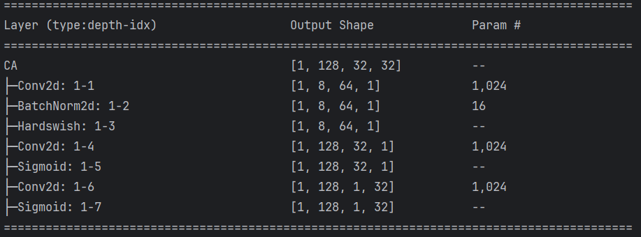
# SimAM
SimAM 是一个无参数注意力机制
【SimAM: A Simple, Parameter-Free Attention Module for Convolutional Neural Networks】：https://www.semanticscholar.org/paper/SimAM%3A-A-Simple%2C-Parameter-Free-Attention-Module-Yang-Zhang/3a173a2042b3d18d21f59187f1e5d7d83e791635
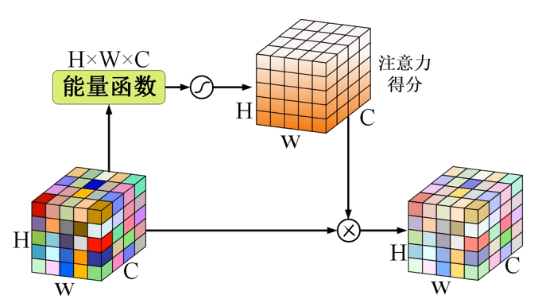
能量函数：
class SimAM(nn.Module): | |
def __init__(self, channel: int, e_lambda: float = 1e-4): | |
super().__init__() | |
self.channel = channel | |
self.e_lambda = e_lambda | |
self.sigmoid = nn.Sigmoid() | |
def forward(self, x: torch.Tensor): | |
# mu:(B,C,1,1) | |
mu = x.mean(dim=[2, 3], keepdim=True) | |
# d:(B,C,H,W) | |
d = (x - mu).pow(2) | |
# y:(B,C,1,1) | |
v = d.mean(dim=[2, 3], keepdim=True) | |
# score:(B,C,H,W) | |
score = d / (4.0 * (v + self.e_lambda)) + 0.5 | |
attn = self.sigmoid(score) | |
# (B,C,H,W) | |
return x * attn |
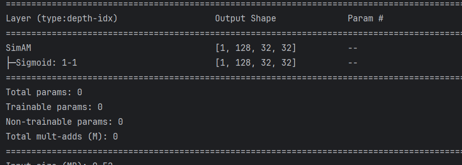
# Triplet Attention
【Rotate to Attend: Convolutional Triplet Attention Module】：https://arxiv.org/abs/2010.03045
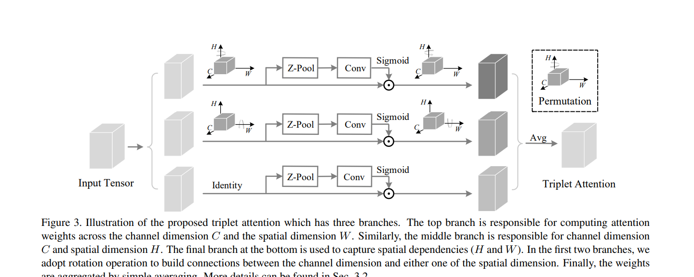
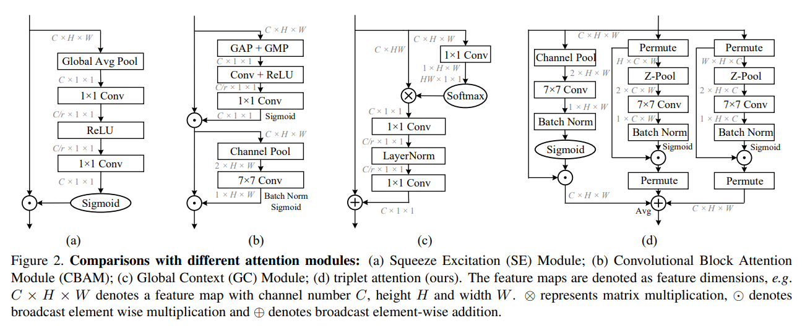
Z-pool: The Z-pool layer here is responsible for reducing the zeroth dimension of the tensor to two by concatenating the average pooled and max pooled features across that dimension. This enables the layer to preserve a rich representation of the actual tensor while simultaneously shrinking its depth to make further computation lightweight. Mathe matically, it can be represented by the following equation:
class ZPool(nn.Module): | |
def forward(self, x: torch.Tensor) -> torch.Tensor: | |
# avg:(B,1,H,W), mx:(B,1,H,W) | |
avg = x.mean(dim=1, keepdim=True) | |
mx = x.max(dim=1, keepdim=True)[0] | |
return torch.cat([avg, mx], dim=1) | |
class BasicConv(nn.Module): | |
def __init__(self, in_ch: int, out_ch: int, kernel_size: int, s=1, p=0, relu: bool = False): | |
super().__init__() | |
self.conv = nn.Conv2d(in_ch, out_ch, kernel_size, stride=s, padding=p, bias=False) | |
self.bn = nn.BatchNorm2d(out_ch) | |
self.relu = nn.ReLU(inplace=True) if relu else nn.Identity() | |
def forward(self, x: torch.Tensor) -> torch.Tensor: | |
return self.relu(self.bn(self.conv(x))) | |
class AttentionGate(nn.Module): | |
def __init__(self, kernel_size: int = 7): | |
super().__init__() | |
self.zpool = ZPool() | |
p = kernel_size // 2 | |
self.conv = BasicConv(2, 1, kernel_size=kernel_size, p=p, relu=False) | |
self.sigmoid = nn.Sigmoid() | |
def forward(self, x: torch.Tensor) -> torch.Tensor: | |
# y:(B,2,H,W) | |
y = self.zpool(x) | |
# y:(B,1,H,W) | |
y = self.conv(y) | |
attn = self.sigmoid(y) | |
return x * attn | |
class TA(nn.Module): | |
def __init__(self, channel: int, kernel_size: int = 7, no_spatial: bool = False): | |
super().__init__() | |
self.channel = channel | |
self.no_spatial = no_spatial | |
self.gate_cw = AttentionGate(kernel_size) | |
self.gate_ch = AttentionGate(kernel_size) | |
self.gate_hw = AttentionGate(kernel_size) | |
def forward(self, x: torch.Tensor) -> torch.Tensor: | |
# contiguous 是让 x1 变成了一个连续张量 | |
x1 = x.permute(0, 2, 1, 3).contiguous() | |
x1 = self.gate_cw(x1) | |
x1 = x1.permute(0, 2, 1, 3).contiguous() | |
x2 = x.permute(0, 3, 2, 1).contiguous() | |
x2 = self.gate_ch(x2) | |
x2 = x2.permute(0, 3, 2, 1).contiguous() | |
if self.no_spatial: | |
out = (x1 + x2) / 2.0 | |
else: | |
x3 = self.gate_hw(x) | |
out = (x1 + x2 + x3) / 3.0 | |
return out |
# GAM
【Global Attention Mechanism: Retain Information to Enhance Channel-Spatial Interactions】：https://arxiv.org/abs/2112.05561
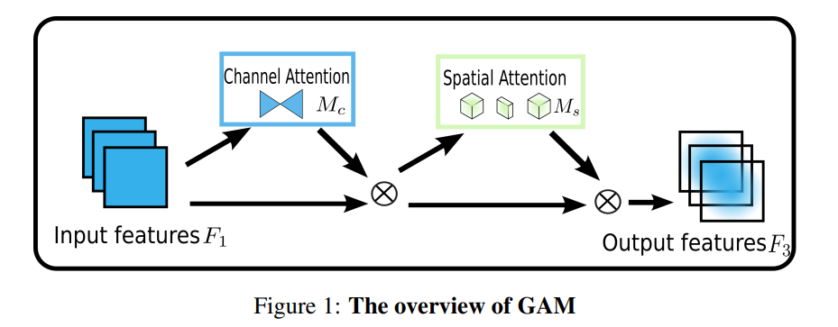
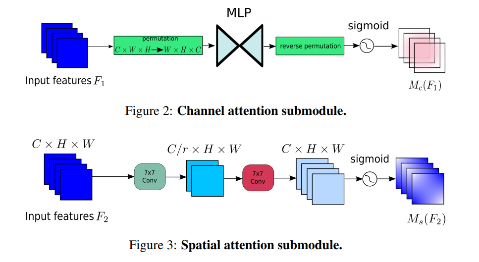
class GAM(nn.Module): | |
def __init__(self, in_channels, out_channels, rate=4): | |
super(GAM, self).__init__() | |
self.channel_attention = nn.Sequential( | |
nn.Linear(in_channels, int(in_channels / rate)), | |
nn.ReLU(inplace=True), | |
nn.Linear(int(in_channels / rate), in_channels) | |
) | |
self.spatial_attention = nn.Sequential( | |
nn.Conv2d(in_channels, int(in_channels / rate), kernel_size=7, padding=3), | |
nn.BatchNorm2d(int(in_channels / rate)), | |
nn.ReLU(inplace=True), | |
nn.Conv2d(int(in_channels / rate), out_channels, kernel_size=7, padding=3), | |
nn.BatchNorm2d(out_channels) | |
) | |
def forward(self, x): | |
b, c, h, w = x.shape | |
x_permute = x.permute(0, 2, 3, 1).view(b, -1, c) | |
x_att_permute = self.channel_attention(x_permute).view(b, h, w, c) | |
x_channel_att = x_att_permute.permute(0, 3, 1, 2) | |
x = x * x_channel_att | |
x_spatial_att = self.spatial_attention(x).sigmoid() | |
out = x * x_spatial_att | |
return out |
# ACmin
【On the Integration of Self-Attention and Convolution】：https://arxiv.org/abs/2111.14556
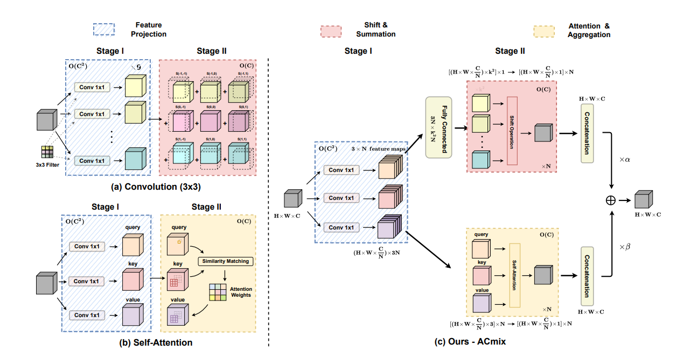
def position(H, W, is_cuda=True): | |
if is_cuda: | |
loc_w = torch.linspace(-1.0, 1.0, W).cuda().unsqueeze(0).repeat(H, 1) | |
loc_h = torch.linspace(-1.0, 1.0, H).cuda().unsqueeze(1).repeat(1, W) | |
else: | |
loc_w = torch.linspace(-1.0, 1.0, W).unsqueeze(0).repeat(H, 1) | |
loc_h = torch.linspace(-1.0, 1.0, H).unsqueeze(1).repeat(1, W) | |
loc = torch.cat([loc_w.unsqueeze(0), loc_h.unsqueeze(0)], 0).unsqueeze(0) | |
return loc | |
def stride(x, stride): | |
b, c, h, w = x.shape | |
return x[:, :, ::stride, ::stride] | |
def init_rate_half(tensor): | |
if tensor is not None: | |
tensor.data.fill_(0.5) | |
def init_rate_0(tensor): | |
if tensor is not None: | |
tensor.data.fill_(0.) | |
class ACmix(nn.Module): | |
def __init__(self, in_planes, out_planes, kernel_att=7, head=4, kernel_conv=3, stride=1, dilation=1): | |
super(ACmix, self).__init__() | |
self.in_planes = in_planes | |
self.out_planes = out_planes | |
self.head = head | |
self.kernel_att = kernel_att | |
self.kernel_conv = kernel_conv | |
self.stride = stride | |
self.dilation = dilation | |
self.rate1 = torch.nn.Parameter(torch.Tensor(1)) | |
self.rate2 = torch.nn.Parameter(torch.Tensor(1)) | |
self.head_dim = self.out_planes // self.head | |
self.conv1 = nn.Conv2d(in_planes, out_planes, kernel_size=1) | |
self.conv2 = nn.Conv2d(in_planes, out_planes, kernel_size=1) | |
self.conv3 = nn.Conv2d(in_planes, out_planes, kernel_size=1) | |
self.conv_p = nn.Conv2d(2, self.head_dim, kernel_size=1) | |
self.padding_att = (self.dilation * (self.kernel_att - 1) + 1) // 2 | |
self.pad_att = torch.nn.ReflectionPad2d(self.padding_att) | |
self.unfold = nn.Unfold(kernel_size=self.kernel_att, padding=0, stride=self.stride) | |
self.softmax = torch.nn.Softmax(dim=1) | |
self.fc = nn.Conv2d(3*self.head, self.kernel_conv * self.kernel_conv, kernel_size=1, bias=False) | |
self.dep_conv = nn.Conv2d(self.kernel_conv * self.kernel_conv * self.head_dim, out_planes, kernel_size=self.kernel_conv, bias=True, groups=self.head_dim, padding=1, stride=stride) | |
self.reset_parameters() | |
def reset_parameters(self): | |
init_rate_half(self.rate1) | |
init_rate_half(self.rate2) | |
kernel = torch.zeros(self.kernel_conv * self.kernel_conv, self.kernel_conv, self.kernel_conv) | |
for i in range(self.kernel_conv * self.kernel_conv): | |
kernel[i, i//self.kernel_conv, i%self.kernel_conv] = 1. | |
kernel = kernel.squeeze(0).repeat(self.out_planes, 1, 1, 1) | |
self.dep_conv.weight = nn.Parameter(data=kernel, requires_grad=True) | |
self.dep_conv.bias = init_rate_0(self.dep_conv.bias) | |
def forward(self, x): | |
q, k, v = self.conv1(x), self.conv2(x), self.conv3(x) | |
scaling = float(self.head_dim) ** -0.5 | |
b, c, h, w = q.shape | |
h_out, w_out = h//self.stride, w//self.stride | |
# ### att | |
# ## positional encoding | |
pe = self.conv_p(position(h, w, x.is_cuda)) | |
q_att = q.view(b*self.head, self.head_dim, h, w) * scaling | |
k_att = k.view(b*self.head, self.head_dim, h, w) | |
v_att = v.view(b*self.head, self.head_dim, h, w) | |
if self.stride > 1: | |
q_att = stride(q_att, self.stride) | |
q_pe = stride(pe, self.stride) | |
else: | |
q_pe = pe | |
unfold_k = self.unfold(self.pad_att(k_att)).view(b*self.head, self.head_dim, self.kernel_att*self.kernel_att, h_out, w_out) # b*head, head_dim, k_att^2, h_out, w_out | |
unfold_rpe = self.unfold(self.pad_att(pe)).view(1, self.head_dim, self.kernel_att*self.kernel_att, h_out, w_out) # 1, head_dim, k_att^2, h_out, w_out | |
att = (q_att.unsqueeze(2)*(unfold_k + q_pe.unsqueeze(2) - unfold_rpe)).sum(1) # (b*head, head_dim, 1, h_out, w_out) * (b*head, head_dim, k_att^2, h_out, w_out) -> (b*head, k_att^2, h_out, w_out) | |
att = self.softmax(att) | |
out_att = self.unfold(self.pad_att(v_att)).view(b*self.head, self.head_dim, self.kernel_att*self.kernel_att, h_out, w_out) | |
out_att = (att.unsqueeze(1) * out_att).sum(2).view(b, self.out_planes, h_out, w_out) | |
## conv | |
f_all = self.fc(torch.cat([q.view(b, self.head, self.head_dim, h*w), k.view(b, self.head, self.head_dim, h*w), v.view(b, self.head, self.head_dim, h*w)], 1)) | |
f_conv = f_all.permute(0, 2, 1, 3).reshape(x.shape[0], -1, x.shape[-2], x.shape[-1]) | |
out_conv = self.dep_conv(f_conv) | |
return self.rate1 * out_att + self.rate2 * out_conv |
# SLAM
【SLAM: A Lightweight Spatial Location Attention Module for Object Detection】：https://link.springer.com/chapter/10.1007/978-981-99-8082-6_29
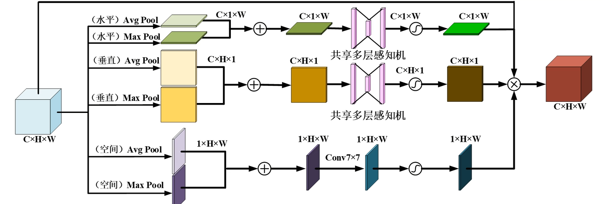
class SLAM(nn.Module): | |
def __init__(self, channels, reduction=16, kernel_size=7): | |
super(SLAM, self).__init__() | |
assert channels > 0 | |
hidden = max(channels // reduction, 1) | |
self.hw_conv1 = nn.Conv2d(channels, hidden, kernel_size=1, bias=False) | |
self.hw_act = nn.ReLU(inplace=True) | |
self.hw_conv2 = nn.Conv2d(hidden, channels, kernel_size=1, bias=False) | |
self.pad = kernel_size // 2 | |
self.s_conv = nn.Conv2d(in_channels=1, out_channels=1, kernel_size=kernel_size, padding=self.pad, bias=False) | |
self.sigmoid = nn.Sigmoid() | |
def forward(self, x: torch.Tensor): | |
b, c, h, w = x.shape | |
fh_avg = x.mean(dim=2, keepdim=True) # b, c, 1, w | |
fh_max = x.max(dim=2, keepdim=True)[0] # b, c, 1, w | |
fh = fh_avg + fh_max | |
mh = self.hw_conv2(self.hw_act(self.hw_conv1(fh))) | |
mh = self.sigmoid(mh) | |
fw_avg = x.mean(dim=3, keepdim=True) # b, c, h, 1 | |
fw_max = x.max(dim=3, keepdim=True)[0] # b, c, h, 1 | |
fw = fw_avg + fw_max | |
mw = self.hw_conv2(self.hw_act(self.hw_conv1(fw))) | |
mw = self.sigmoid(mw) | |
fs_avg = x.mean(dim=1, keepdim=True) # b, 1, h, w | |
fs_max = x.max(dim=1, keepdim=True)[0] # b, 1, h, w | |
fs = fs_avg + fs_max | |
ms = self.s_conv(fs) | |
ms = self.sigmoid(ms) | |
out = mh * mw * ms * x | |
return out |
在 PyTorch 中，当你指定维度（ dim ）去调用 max() 时，它不再只返回一个 “最大值”，而是返回一个元组。
这个元组包含两个部分：
-
[0]- values：指定维度上的最大数值。 -
[1]- indices：最大数值所在的索引位置（也就是argmax）。
# EMA
【Efficient Multi-Scale Attention Module with Cross-Spatial Learning】https://arxiv.org/abs/2305.13563
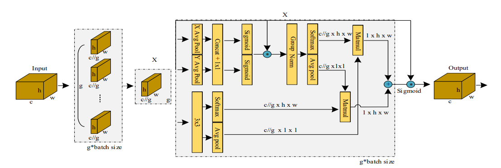
EMA 适合轻量检测
class EMA(nn.Module): | |
def __init__(self, channels, factor=8): | |
super(EMA, self).__init__() | |
self.groups = factor | |
assert channels // self.groups > 0 | |
self.softmax = nn.Softmax(-1) | |
self.agp = nn.AdaptiveAvgPool2d((1, 1)) | |
self.pool_h = nn.AdaptiveAvgPool2d((None, 1)) | |
self.pool_w = nn.AdaptiveAvgPool2d((1, None)) | |
self.gn = nn.GroupNorm(channels // self.groups, channels // self.groups) | |
self.conv1x1 = nn.Conv2d(channels // self.groups, channels // self.groups, kernel_size=1, stride=1, padding=0) | |
self.conv3x3 = nn.Conv2d(channels // self.groups, channels // self.groups, kernel_size=3, stride=1, padding=1) | |
def forward(self, x): | |
b, c, h, w = x.size() | |
group_x = x.reshape(b * self.groups, -1, h, w) # b*g,c//g,h,w | |
x_h = self.pool_h(group_x) | |
x_w = self.pool_w(group_x).permute(0, 1, 3, 2) | |
hw = self.conv1x1(torch.cat([x_h, x_w], dim=2)) | |
x_h, x_w = torch.split(hw, [h, w], dim=2) | |
x1 = self.gn(group_x * x_h.sigmoid() * x_w.permute(0, 1, 3, 2).sigmoid()) | |
x2 = self.conv3x3(group_x) | |
x11 = self.softmax(self.agp(x1).reshape(b * self.groups, -1, 1).permute(0, 2, 1)) | |
x12 = x2.reshape(b * self.groups, c // self.groups, -1) # b*g, c//g, hw | |
x21 = self.softmax(self.agp(x2).reshape(b * self.groups, -1, 1).permute(0, 2, 1)) | |
x22 = x1.reshape(b * self.groups, c // self.groups, -1) # b*g, c//g, hw | |
weights = (torch.matmul(x11, x12) + torch.matmul(x21, x22)).reshape(b * self.groups, 1, h, w) | |
return (group_x * weights.sigmoid()).reshape(b, c, h, w) |
https://blog.csdn.net/DM_zx/article/details/132707712
# SCSA
【SCSA: Exploring the Synergistic Effects Between Spatial and Channel Attention】：https://arxiv.org/abs/2407.05128
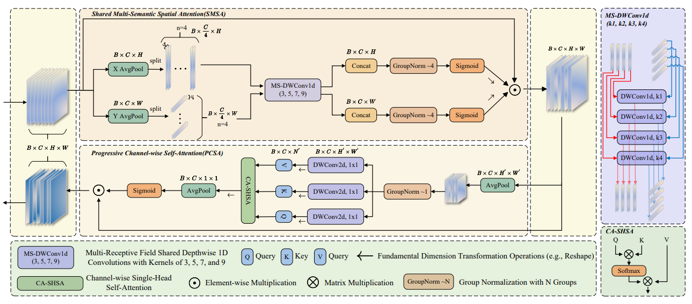
SMSA 空间，PCSA 通道
from einops import rearrange | |
import typing as t | |
class SCSA(nn.Module): | |
def __init__( | |
self, | |
dim: int, | |
head_num: int, | |
window_size: int = 7, | |
group_kernel_sizes: t.List[int] = [3, 5, 7, 9], | |
qkv_bias: bool = False, | |
fuse_bn: bool = False, | |
down_sample_mode: str = 'avg_pool', | |
attn_drop_ratio: float = 0., | |
gate_layer: str = 'sigmoid', | |
): | |
super(SCSA, self).__init__() # 调用 nn.Module 的构造函数 | |
self.dim = dim # 特征维度 | |
self.head_num = head_num # 注意力头数 | |
self.head_dim = dim // head_num # 每个头的维度 | |
self.scaler = self.head_dim ** -0.5 # 缩放因子 | |
self.group_kernel_sizes = group_kernel_sizes # 分组卷积核大小 | |
self.window_size = window_size # 窗口大小 | |
self.qkv_bias = qkv_bias # 是否使用偏置 | |
self.fuse_bn = fuse_bn # 是否融合批归一化 | |
self.down_sample_mode = down_sample_mode # 下采样模式 | |
assert self.dim % 4 == 0, 'The dimension of input feature should be divisible by 4.' # 确保维度可被 4 整除 | |
self.group_chans = group_chans = self.dim // 4 # 分组通道数 | |
# 定义局部和全局深度卷积层 | |
self.local_dwc = nn.Conv1d(group_chans, group_chans, kernel_size=group_kernel_sizes[0], | |
padding=group_kernel_sizes[0] // 2, groups=group_chans) | |
self.global_dwc_s = nn.Conv1d(group_chans, group_chans, kernel_size=group_kernel_sizes[1], | |
padding=group_kernel_sizes[1] // 2, groups=group_chans) | |
self.global_dwc_m = nn.Conv1d(group_chans, group_chans, kernel_size=group_kernel_sizes[2], | |
padding=group_kernel_sizes[2] // 2, groups=group_chans) | |
self.global_dwc_l = nn.Conv1d(group_chans, group_chans, kernel_size=group_kernel_sizes[3], | |
padding=group_kernel_sizes[3] // 2, groups=group_chans) | |
# 注意力门控层 | |
self.sa_gate = nn.Softmax(dim=2) if gate_layer == 'softmax' else nn.Sigmoid() | |
self.norm_h = nn.GroupNorm(4, dim) # 水平方向的归一化 | |
self.norm_w = nn.GroupNorm(4, dim) # 垂直方向的归一化 | |
self.conv_d = nn.Identity() # 直接连接 | |
self.norm = nn.GroupNorm(1, dim) # 通道归一化 | |
# 定义查询、键和值的卷积层 | |
self.q = nn.Conv2d(in_channels=dim, out_channels=dim, kernel_size=1, bias=qkv_bias, groups=dim) | |
self.k = nn.Conv2d(in_channels=dim, out_channels=dim, kernel_size=1, bias=qkv_bias, groups=dim) | |
self.v = nn.Conv2d(in_channels=dim, out_channels=dim, kernel_size=1, bias=qkv_bias, groups=dim) | |
self.attn_drop = nn.Dropout(attn_drop_ratio) # 注意力丢弃层 | |
self.ca_gate = nn.Softmax(dim=1) if gate_layer == 'softmax' else nn.Sigmoid() # 通道注意力门控 | |
# 根据窗口大小和下采样模式选择下采样函数 | |
if window_size == -1: | |
self.down_func = nn.AdaptiveAvgPool2d((1, 1)) # 自适应平均池化 | |
else: | |
if down_sample_mode == 'recombination': | |
self.down_func = self.space_to_chans # 重组合下采样 | |
# 维度降低 | |
self.conv_d = nn.Conv2d(in_channels=dim * window_size ** 2, out_channels=dim, kernel_size=1, bias=False) | |
elif down_sample_mode == 'avg_pool': | |
self.down_func = nn.AvgPool2d(kernel_size=(window_size, window_size), stride=window_size) # 平均池化 | |
elif down_sample_mode == 'max_pool': | |
self.down_func = nn.MaxPool2d(kernel_size=(window_size, window_size), stride=window_size) # 最大池化 | |
def forward(self, x: torch.Tensor) -> torch.Tensor: | |
""" | |
输入张量 x 的维度为 (B, C, H, W) | |
""" | |
# 计算空间注意力优先级 | |
b, c, h_, w_ = x.size() # 获取输入的形状 | |
# (B, C, H) | |
x_h = x.mean(dim=3) # 沿着宽度维度求平均 | |
l_x_h, g_x_h_s, g_x_h_m, g_x_h_l = torch.split(x_h, self.group_chans, dim=1) # 拆分通道 | |
# (B, C, W) | |
x_w = x.mean(dim=2) # 沿着高度维度求平均 | |
l_x_w, g_x_w_s, g_x_w_m, g_x_w_l = torch.split(x_w, self.group_chans, dim=1) # 拆分通道 | |
# 计算水平注意力 | |
x_h_attn = self.sa_gate(self.norm_h(torch.cat(( | |
self.local_dwc(l_x_h), | |
self.global_dwc_s(g_x_h_s), | |
self.global_dwc_m(g_x_h_m), | |
self.global_dwc_l(g_x_h_l), | |
), dim=1))) | |
x_h_attn = x_h_attn.view(b, c, h_, 1) # 调整形状 | |
# 计算垂直注意力 | |
x_w_attn = self.sa_gate(self.norm_w(torch.cat(( | |
self.local_dwc(l_x_w), | |
self.global_dwc_s(g_x_w_s), | |
self.global_dwc_m(g_x_w_m), | |
self.global_dwc_l(g_x_w_l) | |
), dim=1))) | |
x_w_attn = x_w_attn.view(b, c, 1, w_) # 调整形状 | |
# 计算最终的注意力加权 | |
x = x * x_h_attn * x_w_attn | |
# 基于自注意力的通道注意力 | |
# 减少计算量 | |
y = self.down_func(x) # 下采样 | |
y = self.conv_d(y) # 维度转换 | |
_, _, h_, w_ = y.size() # 获取形状 | |
# 先归一化，然后重塑 -> (B, H, W, C) -> (B, C, H * W)，并生成 q, k 和 v | |
y = self.norm(y) # 归一化 | |
q = self.q(y) # 计算查询 | |
k = self.k(y) # 计算键 | |
v = self.v(y) # 计算值 | |
# (B, C, H, W) -> (B, head_num, head_dim, N) | |
q = rearrange(q, 'b (head_num head_dim) h w -> b head_num head_dim (h w)', head_num=int(self.head_num), | |
head_dim=int(self.head_dim)) | |
k = rearrange(k, 'b (head_num head_dim) h w -> b head_num head_dim (h w)', head_num=int(self.head_num), | |
head_dim=int(self.head_dim)) | |
v = rearrange(v, 'b (head_num head_dim) h w -> b head_num head_dim (h w)', head_num=int(self.head_num), | |
head_dim=int(self.head_dim)) | |
# 计算注意力 | |
attn = q @ k.transpose(-2, -1) * self.scaler # 点积注意力计算 | |
attn = self.attn_drop(attn.softmax(dim=-1)) # 应用注意力丢弃 | |
# (B, head_num, head_dim, N) | |
attn = attn @ v # 加权值 | |
# (B, C, H_, W_) | |
attn = rearrange(attn, 'b head_num head_dim (h w) -> b (head_num head_dim) h w', h=int(h_), w=int(w_)) | |
# (B, C, 1, 1) | |
attn = attn.mean((2, 3), keepdim=True) # 求平均 | |
attn = self.ca_gate(attn) # 应用通道注意力门控 | |
return attn * x # 返回加权后的输入 |
注释来自：https://blog.csdn.net/wuling129/article/details/143365753
# ELA
【ELA: Efficient Local Attention for Deep Convolutional Neural Networks】：https://arxiv.org/abs/2403.01123
# 张量操纵神器 einops
einops 被称为 “张量操作的神器”，因为它把复杂的 view 、 reshape 、 transpose 和 permute 组合简化成了一种可读性极强的描述性。
它最常用的三个函数是：
-
rearrange: 重排、拆分、合并维度（最常用）。 -
reduce: 结合了池化 / 均值 / 最大值的维度缩减。 -
repeat: 沿着某个维度复制数据。
input_tensor = torch.rand(1, 32, 256, 128) | |
print(input_tensor.permute(0, 1, 3, 2).shape) | |
print(rearrange(input_tensor, 'b c h w -> b c w h').shape) |
input_tensor = torch.rand(1, 32, 256, 128) # 1,32,256*128 | |
print(input_tensor.view(1, 32, -1).shape) | |
print(rearrange(input_tensor, 'b c h w -> b c (w h)').shape) |
详情请参考官方仓库与文档：https://github.com/arogozhnikov/einops/tree/main